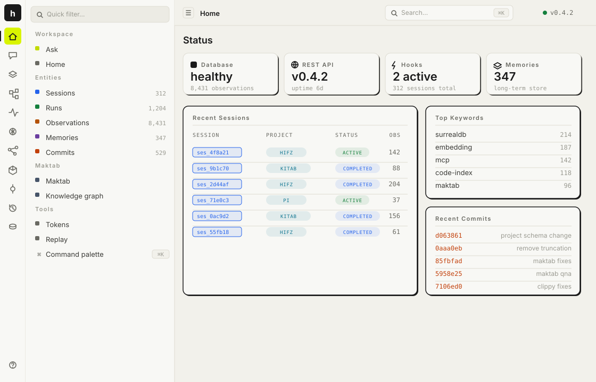
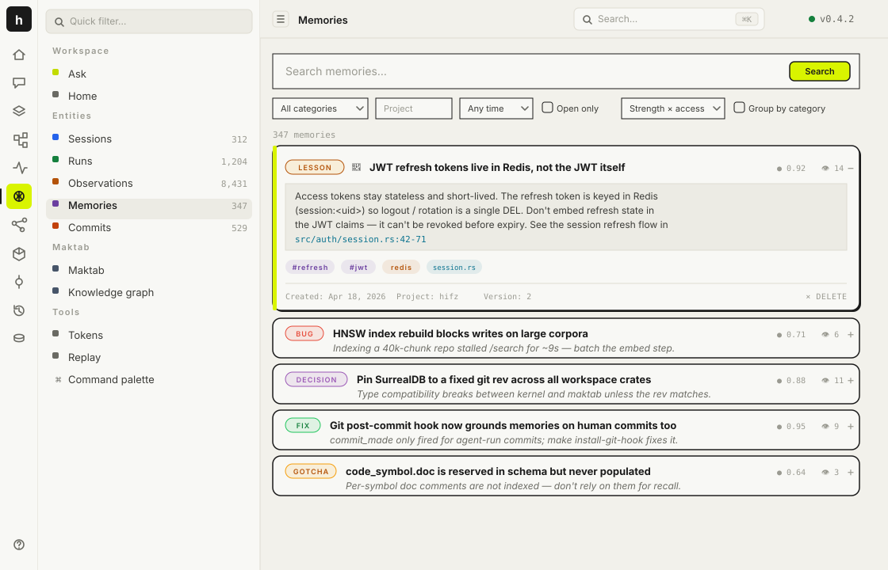
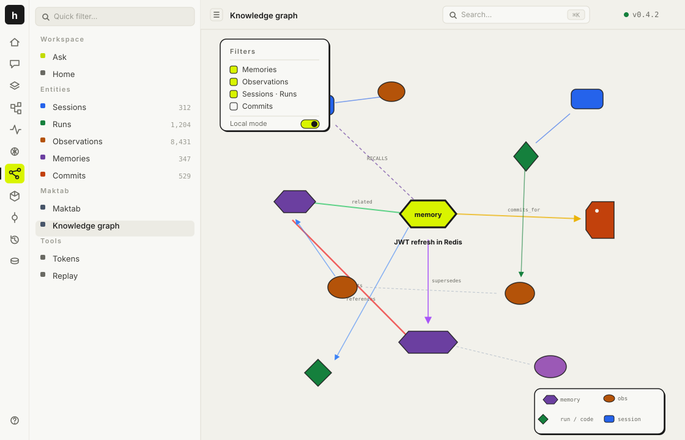
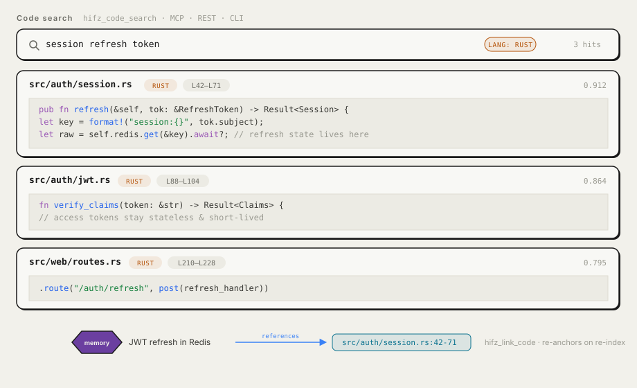
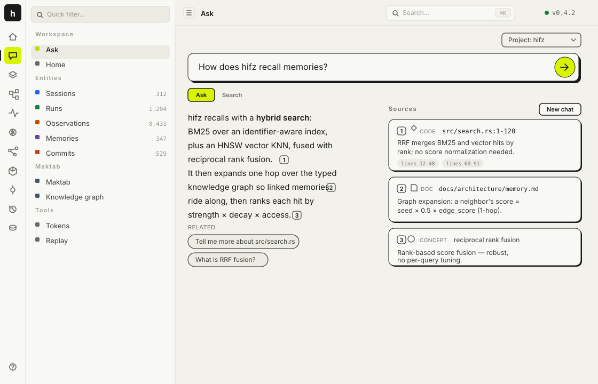
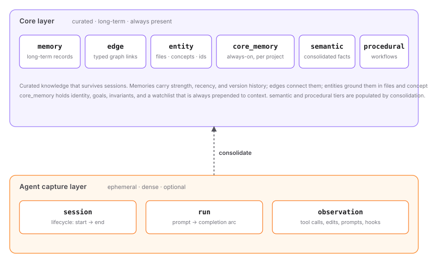
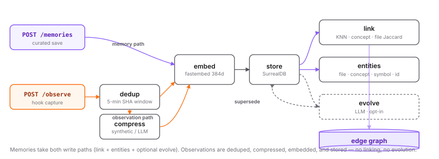

hifz stores, links, ranks, and forgets — so your agents stop drowning in raw logs and start
building on what they learned yesterday. One Rust process. No API keys. Nothing leaves your
machine.
Every prompt, tool call, edit and commit becomes an observation, deduplicated within a 5-minute window. Raw, ephemeral, never evolved.
02 / link
Saves are wired into the graph.
A new memory is embedded, indexed, and matched against existing nodes through three deterministic channels. Typed edges record how memories relate.
03 / recall
Hybrid search returns context.
BM25 + HNSW fused via RRF, then expanded across the graph. Ranking weights recency, access count, and commit grounding so signal beats noise.
Inside the dashboard
One local UI for the whole substrate.
The same Axum process that stores and ranks your memories serves a SvelteKit dashboard at
:3111 — search, graph exploration, code hits, and cited corpus answers,
all on your machine.

Home · health, digest, recent sessions & commits

Memory browser · search, filter, expand

Knowledge graph · typed nodes & edges

Code search · file · line range · snippet

Maktab · corpus Q&A with citations
What's inside
Eight systems, one process.
hifz is opinionated. Curated long-term memory is separated from ephemeral capture, every memory
is wired into a typed knowledge graph, and stale ones decay instead of haunting you.
Two-layer memory
Hooks capture dense, ephemeral observations. A curated core layer holds long-term, project-scoped knowledge. Consolidation lifts patterns from one into the other.
core_memory · semantic · procedural
append-only versioning
provenance chains preserved
Hybrid intelligent search
BM25 full-text fused with HNSW vector search via reciprocal rank fusion. Graph expansion pulls 1-hop neighbours so related context surfaces even when it doesn't match your query.
strength × recency × access
MMR diversification
per-session caps prevent noise
Deterministic graphs
Every save links against existing memory through three independent channels — embedding KNN, concept Jaccard, file Jaccard. No LLM required. Edges are typed, not generic.
cosine < 0.25 · Jaccard ≥ 0.30
supports, contradicts, derives_from
LLM evolution is opt-in
Code search & indexing
Tree-sitter parses your repo in 8 languages and chunks it language-aware. Search is identifier-aware BM25 fused with vector KNN, and memories link to a precise file + line range or named symbol.
8 languages · tree-sitter
BM25 ⊕ vector KNN
links re-anchor on re-index
Maktab corpus Q&A
Point Maktab at a repo plus its docs and it ingests, projects the code graph, extracts concepts, and clusters. Ask the corpus a question and every claim links back to a source — document, code symbol, or concept.
ingest → cluster → insights
answers carry citations
feature-gated: --features maktab
Lifecycle-aware forgetting
TTL garbage collection, contradiction detection, commit-grounded reinforcement, and 60-day decay for abandoned work. Stale info doesn't haunt you; proven knowledge gets stronger.
supersession via Jaccard ≥ 0.9
committed files: strength +15%
uncommitted edits fade
Multi-surface integration
A REST API any language can call, an MCP proxy for Claude Code, slash commands and hooks, and a Svelte dashboard for graph exploration. HTTP-first; no client lock-in.
52 REST · 37 MCP tools
4 slash commands · 14 hooks
dashboard at :3111
4-tier consolidation
Semantic merges session summaries into facts. Reflect clusters by concepts. Procedural extracts recurring workflows. Decay weakens stale memories. Run on demand.
tiers 1 & 3 use Ollama (optional)
tiers 2 & 4 are deterministic
graceful skip if no LLM
Architecture
Typed graph. Deterministic by default.
A curated long-term layer sits above a dense, short-lived capture layer; consolidation lifts
patterns from one into the other. Edges are typed and created deterministically on write — an LLM
is optional, never required.

Two-layer ontology · curated core over ephemeral capture

Write path · embed → store → link
Every saved memory is embedded, stored, then matched against existing memories through three independent channels. Any channel over its threshold creates a typed edge.
Hybrid retrieval fused with reciprocal rank fusion, expanded one hop over the graph, then ordered by a Rust-side score so what shipped surfaces first and abandoned notes fade.
Memories are append-only. When a newer version supersedes an older one, the old row stays — is_latest flips to false and the new ID is appended to supersedes[]. Retrieval filters WHERE is_latest = true; the chain is kept for provenance.
Full architecture, write/read pipelines, and module index in
ARCHITECTURE.md →
Install
One process. Zero cloud.
Build, run, and write your first memory in under a minute. Embeddings run on-device via fastembed ONNX. LLM features are opt-in through Ollama.
# 1. clone & buildgit clone https://github.com/arriqaaq/hifz.git
cd hifz
cargo build --release
# 2. start the server
./target/release/hifz serve --db-path ~/.hifz/data
# save a memorycurl -X POST http://localhost:3111/api/v1/memories \
-H 'content-type: application/json' \
-d '{"project":"demo",
"title":"Auth uses JWT",
"content":"Sessions are signed JWTs."}'# searchcurl -X POST http://localhost:3111/api/v1/search \
-H 'content-type: application/json' \
-d '{"project":"demo","query":"auth"}'
Integrations
Plugged into your agents.
Drop in the adapter and your coding agent auto-captures sessions, runs, edits, and commits. Memory builds itself.